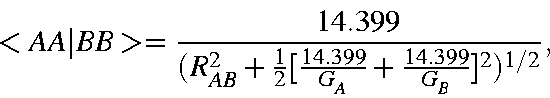

Next: The one-center one-electron
Up: Approximations used in
Previous: Final Assembly of
MINDO/3 Two electron two center integrals
In marked contrast to the other methods, MINDO/3 Coulomb
and exchange integrals are given by the simple Dewar-Sabelli [56,57] -
Klopman [58] approximation. The integral is a
function of the atom types and the interatomic distance
only, and is of form
=\frac{14.399}{(R_{AB}^2+\frac{1}{2}[\frac{14.399}{G_A}+
\frac{14.399}{G_B}]^2)^{1/2}},
\end{displaymath}">
where GA and GB, sometimes called the Gamma-values,
are the averages of the appropriate
one-center two-electron integrals. All finite integrals
over atomic orbitals on two centers are set equal. Thus,
<sAsA|sBsB> =
<sAsA|pBpB> =<pApA|pBpB> =<AA|BB>.
J. J. P. Stewart
Fujitsu Ltd. 2001